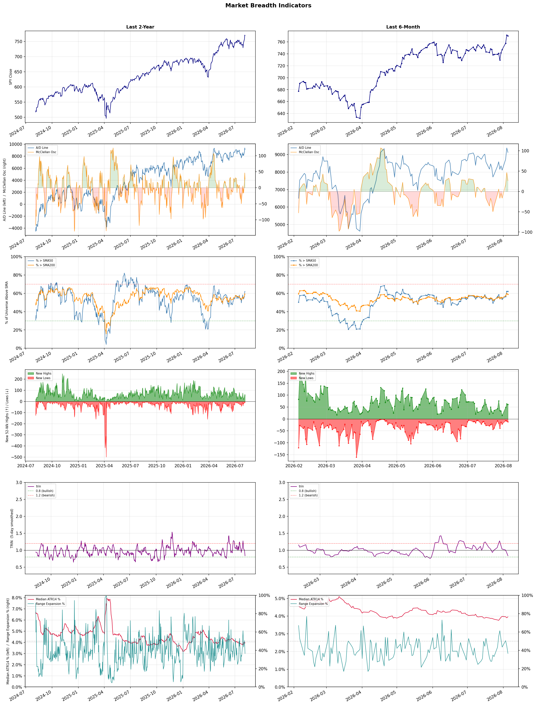

A daily market breadth and sector rotation report for active investors
| Item | Read |
|---|---|
| Regime | Risk-On |
| Risk posture | Aggressive |
| Universe | 1,335 stocks tracked · 61 new 52-week highs · 30 active swing setups |
| Breadth | 62.1% of tracked stocks are above SMA50, new highs exceed new lows (61 vs 12) |
| Leadership | Diagnostics & Research, Oil & Gas Refining & Marketing, and Travel Services |
| Weakest groups | Chemicals, Utilities - Independent Power Producers, and Utilities - Renewable |
Use this report to prioritize research and chart review; validate entries, stops, liquidity, earnings, and risk before acting.
| Item | Read |
|---|---|
| Primary read | Risk-On regime with Aggressive risk posture. |
| Research queue | TWST, ADPT, NEO, IQV, TMO |
| Leadership focus | Diagnostics & Research, Oil & Gas Refining & Marketing, and Travel Services |
| Caution list | Chemicals, Utilities - Independent Power Producers, and Utilities - Renewable |
| Review prompt | Check extension risk, chart location, fundamentals, valuation, and earnings before using any research row. |
| Item | Read |
|---|---|
| Primary read | 0 active risk warnings; use screen output as watchlist input only. |
| Bullish screens | ADPT, EXPE, VIK, BAC, SAN |
| Bearish screens | none |
| Alerts / levels | Automated trigger, stop, ATR, liquidity, reward/risk, and event-risk levels are pending future enrichment. |
| Review prompt | Open the linked chart, define trigger and invalidation, then check liquidity and event risk independently. |
Risk Posture: Aggressive — screen backdrop shows broad participation; still validate each setup independently
Metric context: McClellan below -50 = elevated selling pressure; below -100 = washout territory. Range Expansion = share of stocks with daily range above their 20-day average. Signal Density = share of tracked names appearing in signal screens.
| Breadth Date | % > SMA50 | % > SMA200 | New Highs | New Lows | McClellan | Median Range | Avg Range | Median ATR14 | Range Expansion | Signal Density |
|---|---|---|---|---|---|---|---|---|---|---|
| 2026-08-05 | 62.1% | 58.8% | 61 | 12 | 26.5 | 3.4% | 4.1% | 4.0% | 36.5% | 3.8% |

Prior comparison date: August 4, 2026
| Metric | Prior | Current | Change |
|---|---|---|---|
| Regime | Risk-On | Risk-On | unchanged |
| Risk Posture | Aggressive | Aggressive | unchanged |
| % > SMA50 | 62.0% | 62.1% | +0.1 pts |
| % > SMA200 | 59.7% | 58.8% | -0.9 pts |
| New Highs | 63 | 61 | -2 |
| New Lows | 9 | 12 | -3 |
Top-10 industries entering: Airlines and Banks - Diversified. Top-10 industries leaving: Computer Hardware and Medical Devices. New multi-signal long setups: ACAD, ADPT, AER, ANET, DYN, EMR, GE, JCI, LQDA, MFG. New multi-signal short setups: none.
| Status | Tickers | Read |
|---|---|---|
| Added | ACAD, ADPT, AER, ANET, DYN, EMR, GE, JCI | New technical screen matches vs prior report. |
| Removed | AUR, BAX, CCL, FIVN, GTES, JPM, MPLX, MTCH | No longer present in today's technical screen matches. |
| Still Active | AS, AXTA, BAC, ETN, EXPE, IVZ, MT, RJF | Appeared in both current and prior reports. |
| Promoted | none | Model Screen Score improved by at least 15 points. |
| Downgraded | none | Model Screen Score declined by at least 15 points. |
| Direction | Industry | ETF | Prior Rank | Current Rank | Days | Rank Change |
|---|---|---|---|---|---|---|
| Rose | Copper | COPX | 87 | 14 | 28 | +73 |
| Rose | Oil & Gas Refining & Marketing | CRAK | 72 | 2 | 42 | +70 |
| Rose | Steel | SLX | 77 | 13 | 35 | +64 |
| Rose | Apparel Retail | XRT | 70 | 6 | 28 | +64 |
| Rose | Software - Application | IGV | 70 | 8 | 42 | +62 |
Bull: Copper is experiencing a rising relative strength due to its critical role in the electrification trend, particularly as industries pivot towards AI and renewable energy solutions, as indicated by headlines highlighting COPX as a key player in this transition. The narrative that "copper is the new crude" underscores its increasing demand, while the mention of top-performing copper stocks suggests a robust market sentiment fueled by the anticipated growth in sectors reliant on copper, such as electric vehicles and renewable energy infrastructure. Additionally, the recent rout in tech stocks (Mag-7) may lead investors to seek value in commodities like copper, further bolstering its appeal.
Bear: While the bullish narrative around copper's role in electrification and AI is compelling, it overlooks significant headwinds that could dampen demand and price stability. The recent surge in copper prices may be driven more by speculative trading and short-term market sentiment rather than sustainable industrial demand, especially as global economic uncertainties, such as potential recessions or geopolitical tensions, could lead to reduced consumption in key sectors. Furthermore, the notion that copper is the "new crude" fails to account for the volatility and cyclical nature of commodity markets, which could result in sharp corrections as supply chains stabilize and alternative materials emerge.
Verdict: Copper's rising demand is fundamentally driven by its essential role in the electrification of industries, particularly in electric vehicles and renewable energy infrastructure, as investors seek value in commodities amidst recent tech stock volatility. However, the key risk lies in potential economic slowdowns and geopolitical tensions that could lead to reduced consumption and increased price volatility, suggesting that investors should closely monitor macroeconomic indicators and market sentiment to gauge the sustainability of copper's upward trajectory.
Sources: Yahoo Finance, Google News
Bull: The Oil & Gas Refining & Marketing sector, as represented by the CRAK ETF, is experiencing rising relative strength due to a combination of improving market conditions and geopolitical factors. The recent headlines suggest that after years of stagnation, the sector is benefiting from a resurgence in demand and operational efficiency, with the ETF hitting a new 52-week high and being recognized as a top-performing area. Additionally, hopes for de-escalation in the Middle East could stabilize oil prices, further supporting refiners' profitability and market sentiment, as indicated by articles highlighting top refining stocks and their resilience amid energy uncertainty.
Bear: While the recent performance of the CRAK ETF and the oil refining sector may appear promising, it is essential to consider that this rally could be driven by short-term market sentiment rather than sustainable fundamentals. Rising geopolitical tensions and potential supply chain disruptions could quickly reverse any gains, and the industry's historical volatility suggests that current high valuations may not be justified. Furthermore, increasing regulatory pressures and a global shift towards renewable energy could undermine long-term demand for fossil fuels, making the current optimism potentially misguided.
Verdict: The Oil & Gas Refining & Marketing sector's recent rise, as evidenced by the CRAK ETF reaching a 52-week high, is primarily driven by recovering demand and improved operational efficiencies, alongside hopes for geopolitical stability that could support oil prices. However, investors should remain cautious of the bear case, which highlights the risk of short-lived gains due to potential supply chain disruptions and the long-term impact of regulatory pressures and the global shift towards renewable energy, suggesting that current valuations may not be sustainable.
Sources: Yahoo Finance, Google News
Bull: The steel industry is experiencing a bullish trend primarily due to increased demand driven by advancements in artificial intelligence and infrastructure development, as highlighted by the rising interest in the VanEck Steel ETF (SLX). Additionally, supportive government policies, as indicated by the recent win for steelmakers in Washington, are likely contributing to higher prices and investor confidence, further propelling steel stocks to new 52-week highs. This combination of technological demand and favorable regulatory conditions positions the steel sector for continued growth and relative strength against other industries.
Bear: While the steel industry may currently appear to be benefiting from rising prices and increased demand, this bullish sentiment could be misleading due to underlying vulnerabilities such as overcapacity in global steel production and potential economic slowdowns that could dampen infrastructure spending. Furthermore, the recent government support may not be sustainable in the long term, and any shifts in policy or economic conditions could quickly reverse the current momentum, leading to a correction in steel prices and investor sentiment. Therefore, the current highs in the VanEck Steel ETF (SLX) may not reflect a solid foundation for continued growth.
Verdict: The steel industry's bullish trend is fundamentally driven by robust demand from infrastructure projects and advancements in artificial intelligence, supported by favorable government policies that bolster investor confidence. However, a key risk lies in the potential for overcapacity in global production and economic slowdowns, which could undermine infrastructure spending and lead to a correction in steel prices. Investors should remain cautious and monitor economic indicators and policy shifts that could impact this momentum.
Sources: Yahoo Finance, Google News
Bull: The Apparel Retail sector is experiencing a bullish trend in relative strength, primarily driven by positive sentiment surrounding corporate earnings and macroeconomic stability, as indicated by the recent headlines highlighting rising equity futures amid hopes for a US-Iran truce and the reopening of the Strait of Hormuz. Additionally, the spotlight on top-performing apparel stocks, as noted in articles from The Motley Fool and Yahoo Finance, suggests that investors are increasingly optimistic about the sector's growth potential, further bolstered by strong earnings reports from major players like Amazon, which help to offset weakness in other tech sectors. This combination of favorable macroeconomic conditions and positive stock performance is likely fueling the rising relative strength of the apparel retail industry.
Bear: While the relative strength of the apparel retail sector may appear promising, this optimism is largely predicated on macroeconomic factors and external geopolitical developments that are inherently unstable and unpredictable. Furthermore, the recent focus on a select few top-performing stocks does not reflect the broader challenges facing the industry, such as rising inflation, supply chain disruptions, and shifting consumer preferences towards sustainability, which could dampen overall growth and profitability for many retailers in the sector. As such, the bullish sentiment may be overly optimistic and susceptible to reversal as these underlying headwinds materialize.
Verdict: The apparel retail sector's bullish trend is primarily driven by positive earnings reports and favorable macroeconomic conditions, including rising equity futures linked to geopolitical stability. However, investors should remain cautious, as the industry's reliance on external factors and the looming challenges of inflation, supply chain issues, and shifting consumer preferences towards sustainability pose significant risks that could reverse this upward momentum.
Sources: Yahoo Finance, Google News
Bull: The Software - Application sector is experiencing a rise in relative strength primarily due to positive sentiment driven by strong earnings reports, particularly from companies like Palantir, which saw a significant 16% surge after a blowout Q2 performance. Additionally, the broader market optimism surrounding geopolitical developments, such as the reopening of the Strait of Hormuz and potential US-Iran truce, has led to increased investor confidence in equities, prompting a rotation into technology stocks as a safe haven. This shift is further supported by the narrative that the recent sell-off in software stocks may be more about market sentiment than fundamental weakness, creating opportunities for savvy investors to capitalize on undervalued assets in the sector.
Bear: While the recent surge in the Software - Application sector may seem driven by strong earnings from specific companies like Palantir, it's essential to recognize that this could be a short-lived reaction rather than a sustainable trend. The broader market optimism fueled by geopolitical developments may mask underlying structural issues within the software industry, such as increasing competition, rising costs, and potential regulatory challenges, which could hinder long-term growth and profitability. Furthermore, the narrative of undervalued assets may overlook the reality that many software stocks are still priced at elevated multiples, making them vulnerable to corrections as market sentiment shifts.
Verdict: The Software - Application sector's rise is fundamentally driven by strong earnings reports from key players like Palantir, coupled with a broader market rotation into technology stocks as a safer investment amid geopolitical optimism. However, investors should remain cautious of the bear case, which highlights the risk of structural challenges such as increasing competition and high valuations that could lead to corrections if market sentiment shifts. It's advisable to focus on companies with solid fundamentals and sustainable growth prospects while being mindful of potential regulatory and cost pressures.
Sources: Yahoo Finance, Google News
| Direction | Industry | ETF | Prior Rank | Current Rank | Days | Rank Change |
|---|---|---|---|---|---|---|
| Fell | Gambling | N/A | 13 | 84 | 28 | -71 |
| Fell | Semiconductors | SOXX | 19 | 76 | 42 | -57 |
| Fell | Healthcare Plans | IHF | 1 | 58 | 35 | -57 |
| Fell | Integrated Freight & Logistics | N/A | 16 | 73 | 14 | -57 |
| Fell | Electrical Equipment & Parts | XLI | 32 | 82 | 42 | -50 |
Bear: While the bull analyst highlights potential opportunities in the gambling sector, the increasing regulatory pressures and tax rises are substantial headwinds that cannot be overlooked. These factors not only dampen profitability but also create an uncertain operating environment that may deter long-term investments. Furthermore, the falling relative strength trend indicates a broader market skepticism, suggesting that even with some analysts backing certain stocks, the overall outlook for the industry remains precarious and may lead to further declines in stock performance.
Bull: The gambling industry is experiencing a decline in relative strength primarily due to increasing regulatory pressures and tax rises, as highlighted in the headlines from The Guardian and Morningstar. These factors create headwinds for growth and profitability, leading to cautious sentiment among investors. However, the ongoing interest from analysts in British gambling firms and potential buyouts in the sector, as noted by 24/7 Wall St., suggest that there are still significant opportunities for growth and investment in the long term, making a bullish case for select stocks within the industry.
Verdict: The gambling industry's decline can be fundamentally attributed to escalating regulatory pressures and tax increases, which significantly impact profitability and create a challenging operating environment. The key risk from the bear case lies in the potential for continued regulatory tightening and market skepticism, which could further depress stock performance despite some analysts identifying select investment opportunities. Investors should remain cautious and closely monitor regulatory developments while considering targeted investments in firms with strong fundamentals and adaptive strategies.
Sources: Google News
Bear: While the bull analyst highlights macroeconomic factors and competitive pressures, the underlying issue is that the semiconductor sector is facing a fundamental demand slowdown, exacerbated by inventory corrections and reduced consumer spending. The significant drop in valuations, alongside the staggering $1 trillion loss in market capitalization, suggests that the market is not merely reacting to short-term volatility but is pricing in a more prolonged downturn in demand, particularly as companies like AMD struggle to maintain momentum against dominant players like NVIDIA. This indicates that the sector may not be poised for a comeback anytime soon, as the structural challenges and heightened competition could continue to weigh heavily on performance.
Bull: The semiconductor sector is experiencing a decline in relative strength primarily due to a broader selloff, which has seen chip stocks shed over $1 trillion amid concerns about valuation and market volatility, as highlighted by the headlines. Additionally, individual company performance, such as AMD's 6% drop despite a record quarter, indicates that investor sentiment is being influenced by competitive pressures, particularly from NVIDIA, which is gaining traction in high-profile applications like AI and space technology. This combination of macroeconomic uncertainty and competitive dynamics is contributing to the sector's relative weakness.
Verdict: The semiconductor industry's decline is primarily driven by a fundamental demand slowdown, compounded by inventory corrections and reduced consumer spending, which are leading to significant valuation drops and a loss of market capitalization. While the bull thesis attributes the sector's weakness to macroeconomic factors and competitive pressures, the bear case highlights a more concerning structural challenge that could hinder recovery, especially as companies like AMD struggle against dominant players like NVIDIA. Investors should remain cautious, as the potential for a prolonged downturn in demand poses a key risk to the sector's performance.
Sources: Yahoo Finance, Google News
Bear: While the bull analyst attributes the falling trend in the IHF ETF to profit-taking and temporary volatility, a deeper concern lies in the underlying fundamentals of the healthcare plans sector, which face increasing regulatory scrutiny and rising operational costs. The mixed Q2 results suggest not just short-term volatility but potentially a more systemic issue of profitability and growth sustainability, particularly as insurers grapple with higher claims and the impact of inflation on healthcare services. Additionally, with rising interest rates and economic uncertainty, the defensive nature of healthcare may not provide the same level of protection as it once did, leading to a more cautious outlook for the sector.
Bull: The relative weakness in the Healthcare Plans sector, as indicated by the falling trend in the IHF ETF, can be attributed to recent profit-taking following strong performances, particularly with UnitedHealth hitting a 52-week high before pulling back. Additionally, mixed Q2 results, as highlighted in the Morningstar article, suggest that while the sector has defensive qualities and innovation potential, short-term volatility and uncertainty surrounding earnings may be causing investors to reassess their positions, leading to a temporary decline in relative strength.
Verdict: The recent decline in the Healthcare Plans sector, as reflected in the falling IHF ETF, is primarily driven by profit-taking after strong performances, coupled with mixed Q2 results that indicate potential challenges in profitability and growth sustainability. A key risk from the bear case is the increasing regulatory scrutiny and rising operational costs, which could hinder the sector's ability to maintain its defensive qualities amidst economic uncertainty and inflationary pressures. Investors should closely monitor these fundamental shifts and consider a cautious approach to their positions in healthcare plans.
Sources: Yahoo Finance, Google News
Bear: While the bull analyst attributes the sector's weakness to broader market concerns, the persistent decline in the relative strength trend indicates deeper structural issues within the Integrated Freight & Logistics industry itself. Factors such as rising fuel costs, tightening labor markets, and potential regulatory changes could further squeeze margins and dampen demand, overshadowing any temporary market fluctuations. Additionally, the mixed signals from FedEx and the broader logistics market suggest that the challenges are not merely cyclical but may represent a fundamental shift in consumer behavior and supply chain dynamics that could hinder growth prospects long-term.
Bull: The Integrated Freight & Logistics sector is experiencing relative weakness primarily due to broader market concerns about economic conditions, as highlighted by GXO Logistics' significant 11.3% drop amid sector-wide selling, indicating investor anxiety. Additionally, the ongoing debate about whether to invest in oil or consumer goods, as discussed in the comparison between Frontline and ZIM Integrated Shipping Services, suggests uncertainty in demand dynamics that could impact freight volumes. Furthermore, FedEx's performance, as noted in the headlines, reflects mixed signals about the sector's resilience, contributing to a cautious outlook among investors.
Verdict: The Integrated Freight & Logistics sector's decline is primarily driven by a combination of broader economic uncertainties and structural challenges, including rising fuel costs and labor market tightness, which are squeezing margins and dampening demand. The key risk highlighted by the bear thesis is that these issues may represent a fundamental shift in consumer behavior and supply chain dynamics, suggesting that recovery may be more difficult and prolonged than anticipated. Investors should closely monitor these trends and consider adjusting their exposure to the sector accordingly.
Sources: Google News
Bear: While the bull analyst attributes the decline in the Electrical Equipment & Parts sector to a shift in investor sentiment towards technology and AI, this overlooks the fundamental challenges facing the sector itself, such as rising raw material costs and supply chain disruptions that could dampen profitability. Additionally, the optimism surrounding the U.S. manufacturing industry's performance may not translate to sustained growth for electrical equipment companies, especially if they are unable to adapt to changing market demands or face increased competition from more innovative sectors. As a result, the sector may struggle to regain its relative strength amidst these headwinds.
Bull: The Electrical Equipment & Parts sector is likely experiencing a decline in relative strength due to broader market dynamics and investor sentiment shifting towards sectors benefiting from the AI boom, as highlighted in the CNBC article. Additionally, the mixed performance of equity futures and the focus on reopening hopes in the Strait of Hormuz suggest that investors are gravitating towards sectors with more immediate growth potential, such as technology and manufacturing, as indicated by the U.S. manufacturing industry's strong performance. This shift may be overshadowing the fundamentals of the Electrical Equipment & Parts sector, leading to its relative underperformance.
Verdict: The Electrical Equipment & Parts sector is likely declining due to a combination of rising raw material costs and ongoing supply chain disruptions, which are eroding profitability and making it difficult for companies to adapt to shifting market demands. While investor sentiment is gravitating towards high-growth sectors like technology and AI, the key risk for the sector lies in its inability to innovate and compete effectively, potentially leading to prolonged underperformance. To navigate this environment, companies should focus on cost management and explore partnerships or investments in emerging technologies to enhance competitiveness.
Sources: Yahoo Finance, Google News
| Industry | Rank | ETF | 7d | 14d | 28d | 42d | Chg 42d | Size | 20D | 60D | Composite | Active Setups |
|---|---|---|---|---|---|---|---|---|---|---|---|---|
| Diagnostics & Research | 1 | N/A | 12 | 2 | 7 | 3 | +2 | 16 | 8.2% | 48.4% | 0.923 | 1 |
| Oil & Gas Refining & Marketing | 2 | CRAK | 1 | 1 | 11 | 72 | +70 | 7 | 8.0% | 15.0% | 0.889 | 1 |
| Travel Services | 3 | N/A | 10 | 39 | 31 | 10 | +7 | 10 | 11.8% | 17.4% | 0.870 | 0 |
| Airlines | 4 | N/A | 51 | 49 | 3 | 1 | -3 | 8 | 5.1% | 26.3% | 0.848 | 0 |
| Banks - Diversified | 5 | N/A | 25 | 4 | 10 | 8 | +3 | 16 | 5.8% | 18.4% | 0.837 | 0 |
| Apparel Retail | 6 | XRT | 7 | 28 | 70 | 42 | +36 | 8 | 13.6% | 17.7% | 0.833 | 1 |
| Medical Instruments & Supplies | 7 | N/A | 6 | 25 | 34 | 51 | +44 | 13 | 12.2% | 21.2% | 0.833 | 0 |
| Software - Application | 8 | IGV | 21 | 35 | 38 | 70 | +62 | 74 | 11.9% | 16.1% | 0.822 | 1 |
| Insurance - Life | 9 | N/A | 3 | 7 | 18 | 37 | +28 | 7 | 7.7% | 13.0% | 0.819 | 0 |
| REIT - Hotel & Motel | 10 | XLRE | 9 | 5 | 2 | 4 | -6 | 9 | 6.7% | 20.3% | 0.815 | 0 |
Rank columns (7d–42d) show the industry's rank that many trading days ago — lower is stronger. Chg 42d = rank change vs 42 trading days ago — positive means the industry moved up. 20D and 60D are the mean stock return within the industry over that period. Active Setups: count of today's swing-trade candidates from this industry appearing across all signal screens.
| Industry | Rank | ETF | 7d | 14d | 28d | 42d | Chg 42d | Size | 20D | 60D | Composite | Active Setups |
|---|---|---|---|---|---|---|---|---|---|---|---|---|
| Chemicals | 88 | N/A | 75 | 77 | 84 | 82 | -6 | 8 | -7.2% | -26.6% | 0.067 | 1 |
| Utilities - Independent Power Producers | 87 | XLU | 82 | 68 | 66 | 79 | -8 | 5 | -6.9% | -14.3% | 0.105 | 0 |
| Utilities - Renewable | 86 | N/A | 86 | 86 | 81 | 68 | -18 | 7 | -5.7% | -23.3% | 0.117 | 0 |
| Solar | 85 | TAN | 85 | 81 | 71 | 58 | -27 | 8 | -9.8% | -13.9% | 0.126 | 0 |
| Gambling | 84 | N/A | 36 | 47 | 13 | 39 | -45 | 5 | -13.8% | -8.5% | 0.182 | 0 |
| Grocery Stores | 83 | N/A | 74 | 74 | 62 | 56 | -27 | 5 | -5.4% | -6.1% | 0.198 | 0 |
| Electrical Equipment & Parts | 82 | XLI | 84 | 82 | 49 | 32 | -50 | 12 | -10.3% | -14.1% | 0.201 | 0 |
| REIT - Mortgage | 81 | N/A | 66 | 80 | 69 | 65 | -16 | 12 | -1.6% | -8.7% | 0.216 | 0 |
| Uranium | 80 | URA | 87 | 88 | 88 | 84 | +4 | 6 | 1.8% | -25.1% | 0.221 | 0 |
| Other Industrial Metals & Mining | 79 | N/A | 88 | 87 | 85 | 75 | -4 | 21 | 0.6% | -23.4% | 0.239 | 0 |
Rank columns (7d–42d) show the industry's rank that many trading days ago — lower is stronger. Chg 42d = rank change vs 42 trading days ago — positive means the industry moved up. 20D and 60D are the mean stock return within the industry over that period. Active Setups: count of today's swing-trade candidates from this industry appearing across all signal screens.
These are research candidates from top-ranked stocks, capped at five names per industry to avoid over-concentration. Returns shown (60D, 120D, 250D) are historical — they reflect where prices have already moved, not forward expectations. Extension Risk flags names that may require extra patience or a better entry point. They are not buy signals.
Chart: TV = TradingView chart (opens in browser); PDF = local chart file (if downloaded).
| Ticker | Name | Industry | Industry Rank | Market Cap | 60D Hist | 120D Hist | 250D Hist | Extension Risk | Research Reason | Chart |
|---|---|---|---|---|---|---|---|---|---|---|
| TWST | Twist Bioscience | Diagnostics & Research | 1 | N/A | 102.3% | 131.7% | 344.1% | Very extended | Top-ranked in industry; very extended | TV |
| ADPT | Adaptive Biotechnologies | Diagnostics & Research | 1 | N/A | 78.1% | 57.5% | 110.4% | Extended | Top-ranked in industry; extended | TV |
| NEO | NeoGenomics | Diagnostics & Research | 1 | N/A | 75.6% | 37.4% | 186.5% | Extended | Top-ranked in industry; extended | TV |
| IQV | IQVIA Holdings | Diagnostics & Research | 1 | N/A | 32.1% | 33.2% | 33.0% | Constructive | Top-ranked in industry | TV |
| TMO | Thermo Fisher Scientific | Diagnostics & Research | 1 | N/A | 24.3% | 9.6% | 28.7% | Constructive | Top-ranked in industry | TV |
| PBF | PBF Energy | Oil & Gas Refining & Marketing | 2 | N/A | 50.3% | 71.0% | 169.1% | Extended | Top-ranked in industry; extended | TV |
| VLO | Valero Energy | Oil & Gas Refining & Marketing | 2 | N/A | 25.4% | 48.3% | 126.6% | Constructive | Top-ranked in industry | TV |
| MPC | Marathon Petroleum | Oil & Gas Refining & Marketing | 2 | N/A | 21.6% | 42.7% | 83.3% | Constructive | Top-ranked in industry | TV |
| PSX | Phillips 66 | Oil & Gas Refining & Marketing | 2 | N/A | 18.1% | 25.4% | 69.0% | Constructive | Top-ranked in industry | TV |
| UGP | Ultrapar Participacoes | Oil & Gas Refining & Marketing | 2 | N/A | 2.5% | 19.2% | 101.3% | Constructive | Top-ranked in industry | TV |
| EXPE | Expedia | Travel Services | 3 | N/A | 39.0% | 36.8% | 72.7% | Constructive | Top-ranked in industry | TV |
| BKNG | Booking Holdings | Travel Services | 3 | N/A | 24.8% | 20.0% | -6.5% | Constructive | Top-ranked in industry | TV |
| RCL | Royal Caribbean | Travel Services | 3 | N/A | 19.0% | -1.9% | 4.3% | Constructive | Top-ranked in industry | TV |
| CCL | Carnival | Travel Services | 3 | N/A | 12.5% | -10.3% | 1.5% | Constructive | Top-ranked in industry | TV |
| TCOM | Trip.com | Travel Services | 3 | N/A | -12.8% | -20.7% | -25.8% | Lagging | Top-ranked in industry; lagging | TV |
| ULCC | Frontier Group | Airlines | 4 | N/A | 50.4% | 44.9% | 137.1% | Extended | Top-ranked in industry; extended | TV |
| UAL | United Airlines | Airlines | 4 | N/A | 33.3% | 16.5% | 49.4% | Constructive | Top-ranked in industry | TV |
| ALK | Alaska Air | Airlines | 4 | N/A | 27.4% | -9.5% | -3.6% | Constructive | Top-ranked in industry | TV |
| DAL | Delta Air Lines | Airlines | 4 | N/A | 27.0% | 30.4% | 72.1% | Constructive | Top-ranked in industry | TV |
| JBLU | JetBlue Airways | Airlines | 4 | N/A | 24.5% | 9.5% | 46.5% | Constructive | Top-ranked in industry | TV |
These are technical screen matches from existing signal files. They are not trade recommendations. Trigger, stop, ATR, liquidity, reward/risk, and event risk still require separate validation until those inputs are available.
Model Screen Score is weighted by signal count, industry rank, freshness, and setup type. It is not a probability of profit, expected return, or suitability rating. Industry cap: max 3 candidates per industry.
Signal glossary: Momentum Pullback = stock in an uptrend that has pulled back 10–30% and shows re-entry conditions. MA Compression = short- and long-term moving averages converging, often preceding a directional move. Three-Day Up/Down = three consecutive closes in the same direction. New 52Wk High/Low = price reached a new annual extreme.
Chart: TV = TradingView chart (opens in browser); PDF = local chart file (if downloaded).
| Ticker | Industry | Setups | Close | Industry Rank | Signal Count | Model Screen Score | Reason | Chart |
|---|---|---|---|---|---|---|---|---|
| ADPT | Diagnostics & Research | New 52Wk High; Three-Day Up | 24.60 | 1 | 2 | 100 | Multi-signal; top industry breakout | TV |
| EXPE | Travel Services | New 52Wk High; Three-Day Up | 319.66 | 3 | 2 | 100 | Multi-signal; top industry breakout | TV |
| VIK | Travel Services | New 52Wk High; Three-Day Up | 108.26 | 3 | 2 | 100 | Multi-signal; top industry breakout | TV |
| BAC | Banks - Diversified | New 52Wk High; Three-Day Up | 63.25 | 5 | 2 | 93 | Multi-signal; top industry breakout | TV |
| SAN | Banks - Diversified | New 52Wk High; Three-Day Up | 14.64 | 5 | 2 | 93 | Multi-signal; top industry breakout | TV |
| SNOW | Software - Application | New 52Wk High; Three-Day Up | 316.84 | 8 | 2 | 85 | Multi-signal; top industry breakout | TV |
| YETI | Leisure | New 52Wk High; Three-Day Up | 52.51 | 12 | 2 | 85 | Multi-signal; new-high strength | TV |
| MT | Steel | New 52Wk High; Three-Day Up | 75.35 | 13 | 2 | 85 | Multi-signal; new-high strength | TV |
| NUE | Steel | New 52Wk High; Three-Day Up | 274.74 | 13 | 2 | 85 | Multi-signal; new-high strength | TV |
| AS | Leisure | MA Compression; Three-Day Up | 36.73 | 12 | 2 | 80 | Multi-signal; compression setup | TV |
| S | Software - Infrastructure | New 52Wk High; Three-Day Up | 21.00 | 18 | 2 | 77 | Multi-signal; new-high strength | TV |
| ZETA | Software - Infrastructure | New 52Wk High; Three-Day Up | 27.07 | 18 | 2 | 77 | Multi-signal; new-high strength | TV |
| SN | Furnishings, Fixtures & Appliances | New 52Wk High; Three-Day Up | 182.11 | 20 | 2 | 77 | Multi-signal; new-high strength | TV |
| MFG | Banks - Regional | New 52Wk High; Three-Day Up | 10.70 | 25 | 2 | 77 | Multi-signal; new-high strength | TV |
| WBS | Banks - Regional | New 52Wk High; Three-Day Up | 79.12 | 25 | 2 | 77 | Multi-signal; new-high strength | TV |
| JCI | Building Products & Equipment | New 52Wk High; Three-Day Up | 153.65 | 28 | 2 | 70 | Multi-signal; new-high strength | TV |
| IVZ | Asset Management | New 52Wk High; Three-Day Up | 32.01 | 30 | 2 | 70 | Multi-signal; new-high strength | TV |
| RJF | Asset Management | New 52Wk High; Three-Day Up | 180.55 | 30 | 2 | 70 | Multi-signal; new-high strength | TV |
| STT | Asset Management | New 52Wk High; Three-Day Up | 187.05 | 30 | 2 | 70 | Multi-signal; new-high strength | TV |
| SYF | Credit Services | MA Compression; Three-Day Up | 79.25 | 27 | 2 | 65 | Multi-signal; compression setup | TV |
| ANET | Computer Hardware | New 52Wk High; Three-Day Up | 197.31 | 43 | 2 | 65 | Multi-signal; new-high strength | TV |
| LQDA | Drug Manufacturers - Specialty & Generic | New 52Wk High; Three-Day Up | 89.12 | 44 | 2 | 65 | Multi-signal; new-high strength | TV |
| ACAD | Biotechnology | New 52Wk High; Three-Day Up | 28.80 | 45 | 2 | 65 | Multi-signal; new-high strength | TV |
| DYN | Biotechnology | New 52Wk High; Three-Day Up | 26.17 | 45 | 2 | 65 | Multi-signal; new-high strength | TV |
| NRIX | Biotechnology | New 52Wk High; Three-Day Up | 25.12 | 45 | 2 | 65 | Multi-signal; new-high strength | TV |
| AER | Rental & Leasing Services | New 52Wk High; Three-Day Up | 155.13 | 60 | 2 | 65 | Multi-signal; new-high strength | TV |
| AXTA | Specialty Chemicals | New 52Wk High; Three-Day Up | 38.07 | 61 | 2 | 55 | Multi-signal; new-high strength | TV |
| EMR | Specialty Industrial Machinery | New 52Wk High; Three-Day Up | 162.47 | 63 | 2 | 55 | Multi-signal; new-high strength | TV |
| ETN | Specialty Industrial Machinery | New 52Wk High; Three-Day Up | 447.28 | 63 | 2 | 55 | Multi-signal; new-high strength | TV |
| GE | Aerospace & Defense | New 52Wk High; Three-Day Up | 381.22 | 74 | 2 | 55 | Multi-signal; new-high strength | TV |
How To Use This Report
| Use | Purpose |
|---|---|
| Market map | Start with breadth, regime, risk warnings, and what changed since the prior report. |
| Industry scan | Use leading, deteriorating, rising, and declining industries to focus research. |
| Research queue | Treat long-term candidates as names for deeper fundamental, valuation, and chart review. |
| Technical review | Treat bullish and bearish screen matches as watchlist inputs that require independent trigger, stop, liquidity, and event-risk checks. |
| Source follow-up | Use chart links and source files to verify raw inputs before relying on any row. |
What This Report Is Not
| Not | Meaning |
|---|---|
| Investment advice | The report does not evaluate personal objectives, risk tolerance, tax situation, account type, or suitability. |
| Buy/sell recommendation | Named tickers are research candidates or screen matches, not recommendations to transact. |
| Price target | The report does not provide fair value estimates, targets, or expected returns. |
| Trade plan | Trigger, stop, sizing, reward/risk, liquidity, and event-risk review remain separate user work. |
| Performance claim | Model Screen Score is not validated historical performance or a forecast of future results. |
| Item | Note |
|---|---|
| Version | Daily Report Methodology v1 |
| Model Screen Score | Screen-fit rank based on signal count, industry rank, freshness, and setup type. |
| Not predictive proof | The score is not expected return, probability of profit, historical validation, or suitability analysis. |
| Industry ranks | Composite industry ranks use existing daily ranking outputs and historical rank columns when available. |
| Research candidates | Long-term rows are research candidates from ranked stocks and leading industries, with historical returns labeled as historical only. |
| Technical matches | Bullish and bearish rows are screen matches requiring independent chart, trigger, stop, liquidity, and event-risk review. |
| Source | Status | Rows | Path |
|---|---|---|---|
| Market breadth | present | 1253 | breadth_20260805.csv |
| Industry composite rankings | present | 88 | all_industry_composite_20260805.csv |
| Top ranked stocks | present | 168 | top_ranked_composite_20260805.csv |
| All ranked stocks | present | 1335 | all_stocks_composite_sorted_20260805.csv |
| Top momentum pullbacks | present | 1483 | top_momentum_pullbacks_20260805.csv |
| MA compression | present | 1483 | ma_compression_stocks_20260805.csv |
| Three-day up/down | present | 168 | three_day_up_down_stocks_20260805.csv |
| New 52-week members | present | 73 | breadth_new_52wk_members_20260805.csv |
This report is generated from automated technical screens and is for informational and research purposes only. It is not investment advice, a solicitation, or a recommendation to buy or sell any security. Past performance is not indicative of future results. You are solely responsible for your own investment decisions. Consult a licensed financial advisor before acting on any information herein.